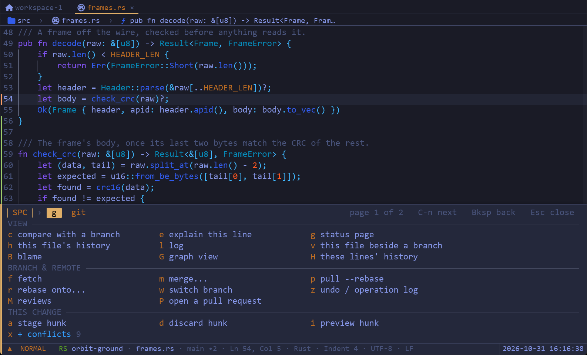
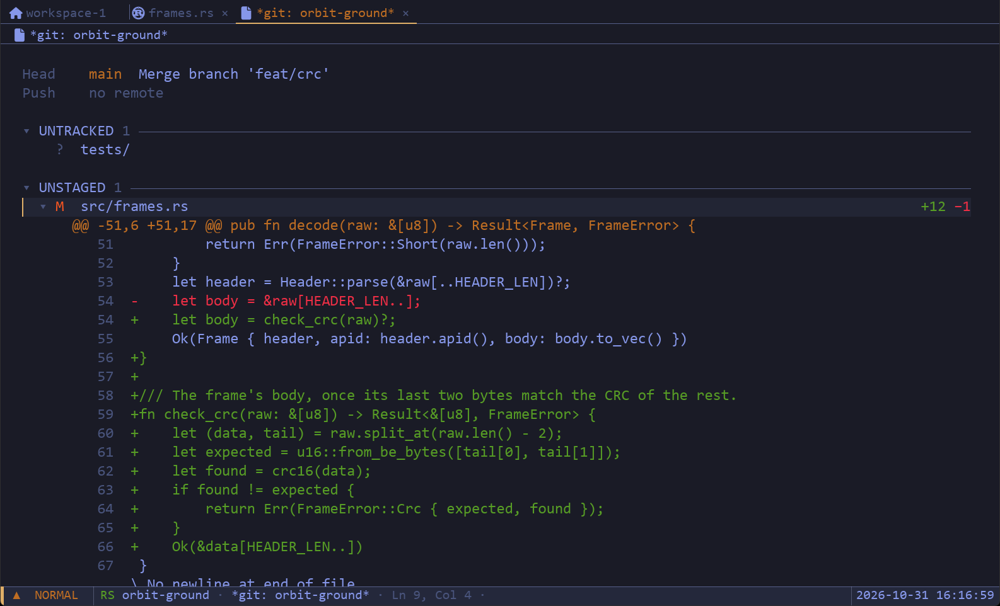
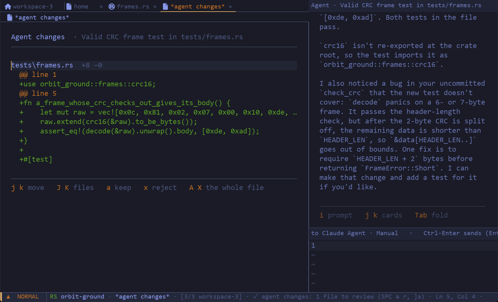
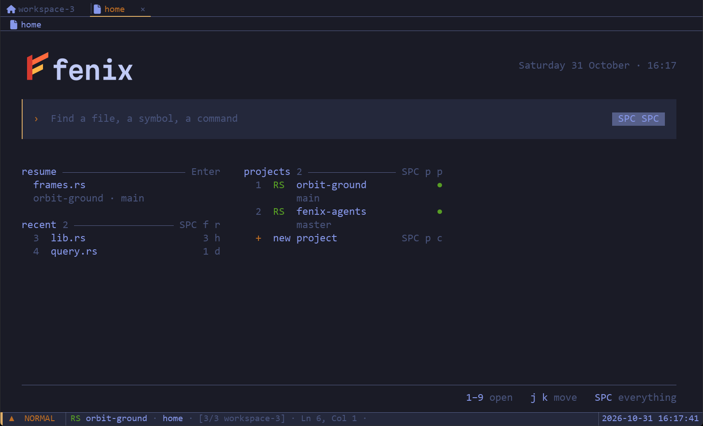
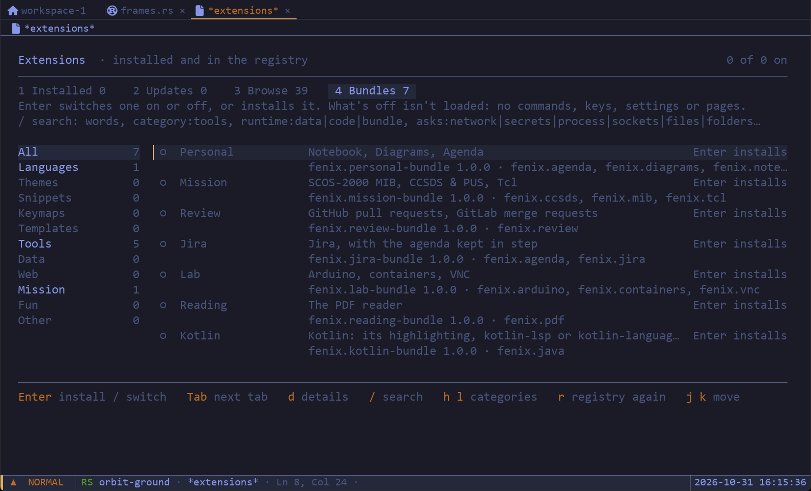
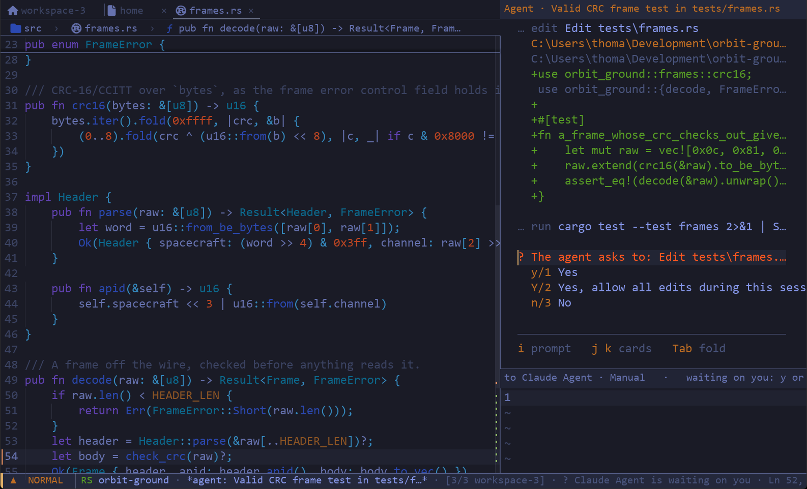

Fenix is a keyboard-first editor written from scratch in Rust. Real Vim editing, Git, a debugger, coding agents and terminals live in one GPU-rendered window, each a few keys away.

Fenix brings the tools you'd otherwise switch windows for into pages you move between with the keyboard, and none of them asks for a plugin hunt first.




Claude Code, Codex, Devin, Gemini CLI, or any agent that speaks the Agent Client Protocol, runs in a dock beside the file you're in. You see each command as it runs, and every change it makes is a hunk you accept or reject.
Run fenix --mcp and agents can ask Fenix back: its language servers, diagnostics and open buffers.

Each extension is a WebAssembly component that may do only what its manifest asks for, and you see that list before you install. The registry is signed, and every package is checked against it.
The installer needs no administrator. It adds Fenix to the Start menu and your PATH, and a newer one upgrades in place. Or with Scoop:
A .deb or .rpm puts Fenix in your applications menu, or unpack the archive and run fenix. Any distribution with glibc 2.35 or newer.
With a stable Rust toolchain: